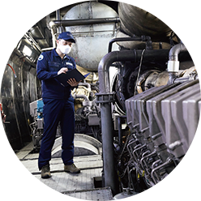

행복하고 안전한 바다를 만들기 위한 진심
안전을 가슴 깊이 새긴 인천지사
그 무엇도 품을 듯한 광대한 바다는 시시때때로 모습을 달리하며 선박들을 맞는다. 때문에 바다에서의 안전은 아무리 강조해도 지나침이 없다. 선박 검사와 출항 전 검사 등은 해양 안전을 위해 지켜야 할 기본 중의 기본이다. 수도권 지역의 해양 안전을 책임지는 인천지사. ‘안전’이라는 단어를 가슴에 새기고 열정을 다하는 인천지사 덕분에 해양 안전은 언제나 ‘이상무’다.
Text. 한율 Photo. 고인순
수도권 지역의 선박 안전을 책임지다
우리나라 서해 최북단인 백령도부터 경기도 화성에 이르기까지, 인천지사는 수도권 지역 선박들의 안전을 책임진다. ‘선박의 안전이 곧 인천지사의 존립 이유’라는 모토를 세우고, ‘완벽하고 철저하게’라는 기치 아래 업무에 만전을 기하고 있는 이곳은 늘 정과 웃음이 넘쳐난다. ‘해양 안전을 지킨다’는 자부심으로 똘똘 뭉쳐 일하는 직원들 덕분이다. 정해청 지사장이 먼저 그들의 노고에 대해 이야기했다.
“선박 검사는 꼭 필요하고 반드시 해야 하는 일임에도 불구하고 누군가에게는 귀찮고 피하고 싶은 규제로 느껴질 수 있습니다. 간혹 ‘내 배는 내가 알아서 한다’는 생각으로 잘 응하지 않는 선주들도 있는데, 그분들을 이해시키고 설득하는 것이 검사보다 더 어렵습니다. 그래서 검사원은 기술직이기도 하지만 감정 노동자이기도 합니다.”
인천지사는 어선 2,300척·일반선 750척·수상레저선 3,400척으로 총 6,500척의 선박을 관리하고 있다.
다양한 종류의 어선을 비롯해 여객선, 유람선, 유조선 등 각종 선박이 인천을 근거지로 왕래하니 선박 검사의 업무 강도 또한 높다. 최경일 팀장이 수도권 지역의 특징을 설명했다.
“전국 총 19개 지역에 지사가 있는데, 그중에서도 인천은 조수간만의 차가 가장 큰 곳입니다. 바닷물이 완전히 빠져야 선박 전체를 검사할 수 있는데, 하루 종일 물이 차 있어서 검사 시간을 잡기가 매우 어렵습니다. 그래서 근무 시간 외의 시간에 업무를 해야 하는 일도 비일비재합니다. 게다가 수도권은 교통 체증이 워낙 심해 업무를 수행하는 데 큰 어려움이 있습니다.”
이른 오전이나 저녁 무렵에 하는 검사가 일상이 된 이들은 고객과의 약속을 지키기 위해 지체하지 않고 현장으로 달려 나간다. 안전을 지키기 위해서는 시간을 따질 여유가 없기 때문이다.
즐겁고 행복한 조직이 일구는 성과
인천지사는 최근 유·도선의 선령 연장검사 제도를 개선하는 데 기여해 주목받았다. 유선과 도선의 경우 세월호 참사 이후인 2017년부터 강화된 법령으로 선박 검사가 진행되었다. 선령이 오래된 배는 일 년에 한 번씩 조선소에 배를 올리고 엔진을 개방해 구조물 전부를 확인하는 작업을 거쳐야 했는데, 그 비용이 배에 따라 3천만 원에서 5천만 원 정도 소요돼 선박 소유자에게는 엄청난 부담으로 작용했다. 이에 선주들이 인천지사를 방문해 심정을 토로하는 일도 잦았다. 정해청 지사장이 당시 일을 설명했다.
“때마침 행정안전부 유·도선 담당 공무원이 인천을 방문하는 일이 생겨 저희가 직접 찾아가 유·도선 선령 연장검사 제도의 불합리한 상황을 설명하고 개선을 요청했습니다. 이후 수차례에 걸쳐 본사 검사기준실과의 협의를 통해 개선안을 제출했고, 마침내 2020년 6월 검사 기준이 합리적으로 개정될 수 있었습니다.”
인천지사는 공단 우수사례 경진대회 3년 연속 수상이라는 영예를 거머쥐었으며, 2019년과 2021년에는 ‘올해의 KOMSA 부서’에 선정되는 등 괄목할 만한 성과를 거두었다. 이에 대해 정해청 지사장은 “내 일, 남의 일 가리지 않고 솔선수범하는 문화, 살갑게 소통하고 적극적으로 협력하는 자세는 인천지사의 가장 큰 자랑입니다. 직원들 모두 출근하고 싶고, 일하고 싶은 직장을 만들어 나가기 위해 노력하고 있습니다. 이러한 조직문화 덕분에 인천지사가 다양한 성과를 낼 수 있었다고 생각합니다"라며 직원들에게 공을 돌렸다.
인천지사에서 검사원으로 첫 근무를 시작한 한준희 검사원은 기억에 남는 일화를 소개했다. 어업인 근로 여건 개선과 어선 안전 강화를 위한 새로운 건조기준인 ‘표준어선형’ 제도 도입에 맞춰 제1호 표준어선을 검사했던 일이다. 한준희 검사원은 “제1호 표준어선의 문제점을 찾고 해결하는 과정은 험난했습니다. 선주, 설계사, 조선소의 의견을 조율하면서 프로젝트를 성공시키기 위해 애썼는데요. 제1호 표준어선이 성공적으로 건조돼 인도될 때 어민들의 복지 향상에 기여한 것 같아 큰 보람을 느꼈습니다”라고 말하며 환하게 웃었다.

편리하고 스마트한 서비스 구현으로 고객가치 지향할 것
고객은 점점 편리하고 수준 높은 서비스를 요구하고 있다. 이를 위해 인천지사도 발 빠르게 대응 중이다. 인천지사는 경기도 화성에 별도의 사무소를 개소해 직원들이 주 2회 상시 근무를 할 수 있도록 했다. 신속한 고객 서비스를 펼치기 위함이다. 현재 인천 남항에 건립 중인 스마트선박안전지원센터도 서비스의 질을 한층 높일 것으로 전망된다.
아울러 인천지사는 바다 환경 보호를 위한 활동도 연 2회 진행한다. 바다는 우리 모두의 터전이라는 생각 때문이다.
정해청 지사장은 “앞으로도 인천지사는 검사원들이 당당하게 검사 업무를 수행할 수 있는 환경을 만들어 나갈 것입니다. 우리 직원들은 다양한 경험을 가진 최고 수준의 기술 인력이자 중소형 선박 분야의 전문가들입니다. 선박의 안전을 위해 검사원들이 자신의 목소리를 내는 것이 무엇보다 중요하다고 생각합니다. 이를 위해 검사원으로서의 자부심과 자긍심이 고취되는 조직문화를 만들어 나가면서 직원들의 역량 강화를 위해 더욱 노력할 것입니다”라며 인천지사 수장으로서의 각오를 전했다.
안전하고 깨끗한 바다를 만들기 위해 노력하는 인천지사. 이들의 열정과 노력이 해양 안전을 담보한다.
인천지사 운항관리센터
소통과 협력, 배려와 존중으로 만들어가는 안전한 바다
인천지사 운항관리센터(이하 ‘운항관리센터’)는 ‘고객에게 한 걸음 더 가까이’를 표방하며 최상의 서비스를 펼치기 위해 노력하고 있다. 규정과 절차를 바탕으로, 배려하고 존중하는 문화는 운항관리센터의 크나큰 자랑이다. 원활한 소통과 협력을 가장 중요한 가치로 여기는 운항관리센터, 박진규 차장이 이들이 맡은 업무에 대해 설명했다.
“규정과 절차만을 내세우며 딱딱하게 업무를 하기보다는 선주나 선장을 비롯한 업계 관계자들과 고객의 목소리에 귀 기울이려고 노력합니다. 선사들과 운항관리센터가 조화롭게 어우러질 때, 보다 효율적으로 업무를 수행할 수 있습니다. 우리가 시행하고 있는 사전예고제도 그 일환입니다. 다음날 기상 악화가 예상되면 오후 2시에 운항 사전 협의를 거쳐 운항 결정을 미리 합니다. 그러면 해운사는 여객선 예약 고객에게 미리 운항 정보를 알려줄 수 있기 때문에 업무 효율성을 높일 수 있습니다. 뿐만 아니라 매일 아침 6시에 사업자들과 기상 상황을 확인하며 소통하는 시간도 갖고 있습니다. 고객들의 이야기를 듣는 것에서부터 운항관리센터의 하루가 시작됩니다.”
김민수 차장은 “법규 및 지침 등에 따라 업무를 수행하면서도 항상 고객의 입장에서 생각하려고 노력합니다. 검사 과정에서 최대한 불편이 느껴지지 않도록 하고, 안전한 운항을 위한 안내를 상세히 하는데요. 배려하고 이해하는 마음으로 하나가 될 때 해양 안전이 더욱 강화된다고 생각합니다”라며 소통과 협력을 강조했다.
현장에서는 안전관리보다 더 중요한 것이 없습니다. 운항관리센터는 앞으로도 한치의 소홀함이 없이 안전을 지키기 위해 노력하겠습니다.
대외적인 소통을 잘하려면 대내적인 소통이 무엇보다 원활해야 한다. 운항관리센터 직원들은 자주 대화하는 시간을 갖고 업무를 공유하고, 토론과 토의를 통해 문제점을 해결함으로써 일의 전문성과 일관성을 유지한다. 직원들은 다양한 의견을 제시하고 받아들이는 과정에서 성장을 경험하고 있다.
인천지사 운항관리센터는 지난해 말 인천과 제주를 오가는 항로가 취항함에 따라 더욱 분주해졌다. 3월에는 영종도 삼목항에 운항관리센터를 개소해 고객 서비스에 더욱 만전을 기하고 있다. 김민수 차장은 “첫째도 안전! 둘째도 안전!”이라며 완벽하고 철저한 업무 수행을 강조했다.
”직원 모두가 철두철미한 자세로 사소한 결함 하나도 완벽하게 처리해야 한다는 생각을 갖고 있습니다. 현장에서는 안전관리보다 더 중요한 것이 없습니다. 운항관리센터는 앞으로도 한치의 소홀함이 없이 안전을 지키기 위해 노력하겠습니다.“
인천지사 운항관리센터 전 직원들은 “한마음으로 해양 안전을 위해 최선을 다하겠다”며 각오를 전했다. 이들의 힘찬 목소리와 눈빛에서 든든함이 느껴졌다.
INTERVIEW
인천지사 정해청 지사장
우리가 해양 안전의 든든한 버팀목입니다!
1998년 입사한 이래 목포지사를 거쳐 16년간 본사 근무를 하고, 인천지사로 발령을 받아 지사 근무는 8년째입니다. 어선들이 안전하게 조업해 만선을 할 때, 수리 비용이 많이 들었음에도 불구하고 안전을 지켜줘서 고맙다고 인사를 전하는 고객들을 만날 때 보람을 많이 느꼈습니다. 그러면서 업무에 대한 자부심을 더욱 키울 수 있었지요. 2019년 8월 인천지사에 부임한 이래 지금까지 무탈하게 지낼 수 있었던 건 모두 인천지사 직원들 덕분입니다. 저는 인천지사에서 근무하면서 행복하다는 생각을 참 많이 했습니다. 여름 햇볕으로 뜨겁게 달궈진 선체 내부에서의 작업, 손을 에일 듯한 차가운 겨울철 야외 검사 등 어떠한 환경에서도 자신의 임무를 놓치지 않는 검사원들의 철저한 책임감이 해양 안전을 지키는 든든한 버팀목입니다. 항상 자신의 자리에서 성실하게 일하는 직원들이 있기에 인천지사는 앞으로도 발전을 거듭해갈 것으로 믿습니다. 앞으로도 인천지사의 멋진 성장을 지켜봐주세요!